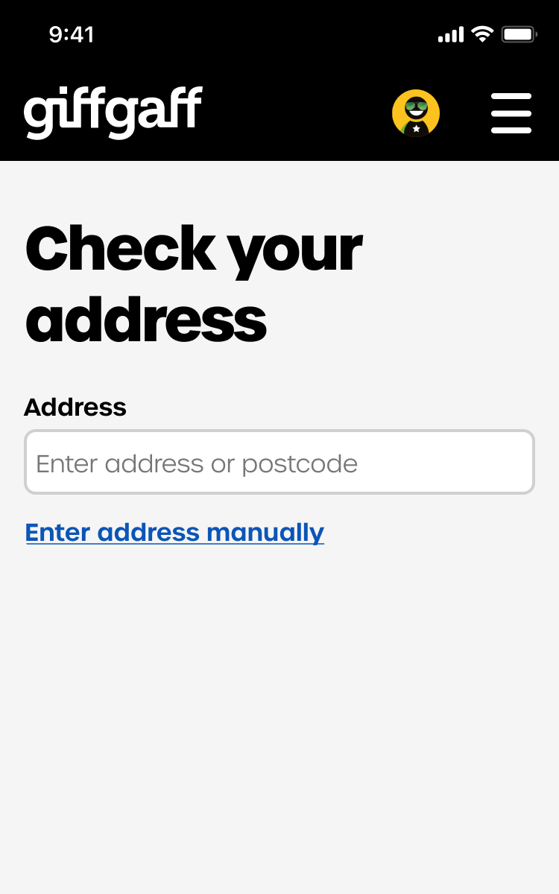
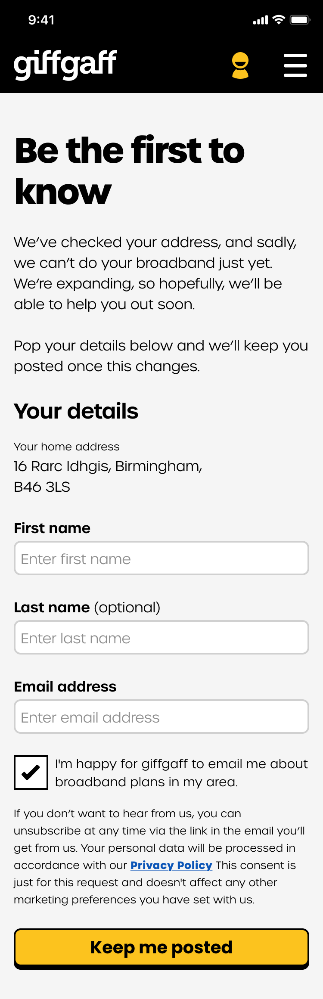
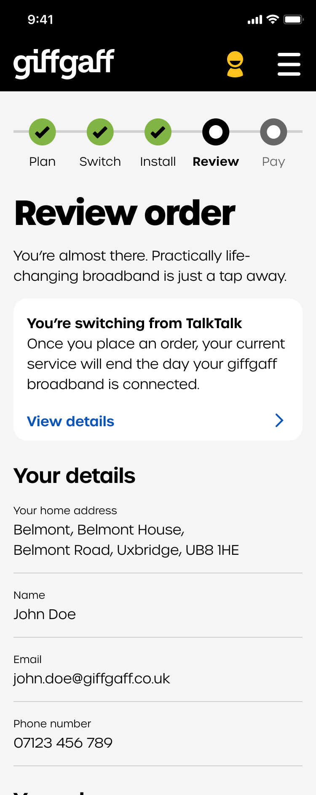
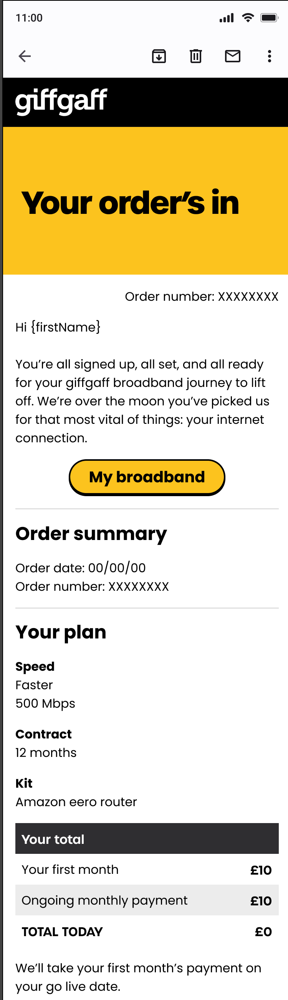

Case study 4 of 7 · New service
The whole buy journey
giffgaff had sold SIMs for 15 years. In 2025 it started selling full fibre broadband, which comes with an address check, a switch from your old provider, engineer visits and a contract. I wrote every screen of the journey and the messages around it.
- Role
- Senior content designer, Discover and Buy team. I did this work on my own
- Team
- Product, product design, engineering, legal, trading, member services
- When
- Design sprint 2023, user trials 2024, controlled launch May 2025, commercial launch September 2025, optimisation through 2026
- Methods
- Concept tests, moderated trials, comprehension tests, reading-age audits, A/B tests
- 11screens, from landing page to order confirmationEvery word on every screen
- 40+automated emails and texts around the journeyConfirmations, reminders, delays, rebooking, contract documents
- 2023first design sprint, through to public launch in 2025And optimising it ever since
- 38help articles audited for reading ageTarget reading age 9 to 11
The situation
Members expected the giffgaff they knew: no contracts, no jargon and no hard sell. Broadband came with things the brand had never had to explain: whether we can reach your address at all, Ofcom's One Touch Switch process, 2 engineer visits, a minimum term, and later a price that changes after an introductory offer. Plus a wholesale partner whose network we were selling on.
I joined the broadband design sprint in June 2023 and stayed on Discover and Buy through the user trials, a controlled launch to a few hundred members and the public launch in September 2025. The buy journey's content was mine throughout, and I did the work in this case study on my own.
The journey
11 screens. I owned the words on all of them, plus the emails and texts that follow an order.
- Landing page
- Check your address
- Choose a plan
- Plan your switch
- Log in or sign up
- Key install info
- Book outside install
- Book home install
- Review your order
- Pay
- Order confirmed
Around the journey there are 40-odd triggered messages: order confirmation, "you're live", install reminders, delay updates, rebooking prompts, abandoned-order nudges at 30 minutes, 24 hours and 7 days, and the contract documents legal needs us to send.
What I set out to do
Early in 2024 I wrote down the principle the rest of the work followed: keep it simple, be honest about what happens, and where we can, make the honesty a benefit in itself. Sounds obvious. In practice it meant arguing to keep information on the page that made the offer look a bit less shiny, and writing the awkward moments (we can't reach you yet, the switch didn't match, the engineer's delayed) with as much care as the sales pages.
Decisions worth showing
Naming the network partner
The broadband runs on Virgin Media's network, and the parent company's name means very little to most people. I pushed for naming the 2 brands members already know, O2 for mobile and Virgin Media for broadband, so the footer line explains whose network it is using names people already trust.
When we can't reach your address
Most people who check their address can't get the service yet, so that screen sees more people than the checkout does. It had to be a decent ending rather than a dead end. The heading turns the bad news into a small plus, the body says what's happened and why in 2 lines, and the form asks for one thing.
Check your address

Not serviceable yet

Keeping the uncomfortable facts on the page
I pushed to keep early termination charges on the landing page. Without that line we weren't showing the fairness we were claiming. Same instinct on the smaller calls. "Term length" rather than "contract" on the order review, because it answers the question people actually have without pretending the commitment isn't there. A promo line that says "for your first 6 months of a 24 month plan" rather than leading with the discount on its own.
It also meant staying inside the rules. A 200Mbps plan isn't "ultra fast" under Ofcom's definition, so we don't call it that. And I rewrote the search snippets so the price people see in Google is the one they'll pay once the offer ends.
Explaining what the research kept flagging
Trialists were confused by 2 installation visits, no landline and where the router comes from. Nobody had told them, so that was on us. I wrote the "key install info" step to set expectations before booking, raised the landline and router gaps as content tickets, and rewrote the help centre's switching article after an audit of 38 broadband help articles gave it the highest severity in the set, with a reading age of 12 to 13 for a step most people meet once.
What trialists said
"The usual giffgaff simplicity and style."
Trialist, controlled launch survey
"The information is really clear and jargon-free, maintaining that really great giffgaff tone."
Trialist, research playback
Since launch
I've kept improving the journey since September 2025, testing screens in Maze myself and writing the variants for A/B tests. The switching step and the plan pages get their own case studies.
Write the unhappy paths first. The not-serviceable screen, the failed switch and the delayed engineer are where most people actually meet the brand, and they were the last things anyone briefed.
3 more screens
-
Choose plan

Prices, promo and term in one view, with the price promise above the cards. -
Review order

The switch gets restated in plain words right before payment, so nobody's surprised later. -
Order confirmation email

One of the 40-odd messages around the journey. What you ordered, what it costs, what happens next.
Screens are from the design files, with placeholder details. Some launch-era values differ from today's plans.